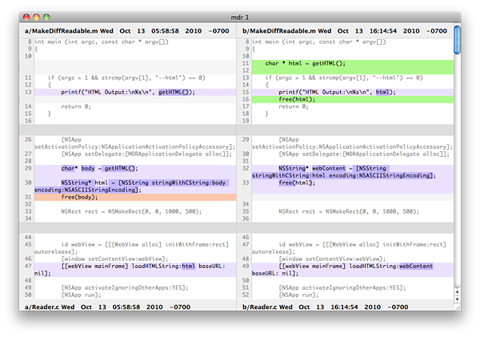

Sometimes diff output can be a pain to read. MDR is a simple tool that reads unified diff output from your favorite version control system or straight from the diff program itself and displays a graphical version of the same information complete with colored highlights of the changes and line numbers.

Mac: mdr_mac1.0b1.zip
Windows: mdr_win1.0b1.zip
This program is in beta. Please, if you have any feedback for find a bug let me know.
All you need is the mdr executable (mdr.exe on Windows). Move or copy it to a place where you like to keep executables. (I like to use ~/bin). Make sure this location is in your PATH.
The easiest way to use MDR is to pipe diff output from another program to it. For example, if you are using git for source control, you can view the current changes you’ve made in MDR with the following:
$ git diff | mdr
The same sort of thing works in any situation where you would otherwise be looking at diff output. Some other examples:
$ hg diff | mdr
$ hg diff -r30:31 | mdr
$ diff -u file1.txt file2.txt | mdr
You can also pipe in diff output that has been saved to a file:
$ diff -u file1.txt file2.txt > changes.diff
$ mdr < changes.diff